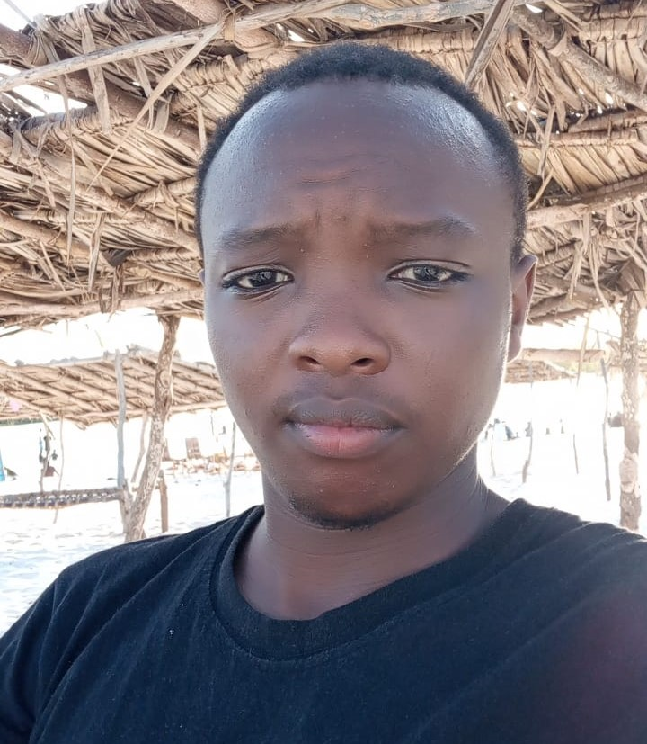

Samuel Muturi Njathi

Career Objectives
- To work in a dynamic and challenging environment and excel through team work and dedication.
- To be a team player and use my experience and skills to improve productivity of the company.
Educational Background
- Bachelors of Technology in Information Communication Technology (2019- 2023)
Technical University of Mombasa
- Kenya Certificate of Secondary Education (2015-2018)
Kiaguthu Boys’ High School
- Kenya Certificate of Primary Education (2006-2014)
Githumu Academy
Work Experience
Internship at Swahilipot Hub Mombasa- (January 2023 – April 2023)
Professional Skills
- Excellent communication skills and innovative assertive and strategic thinker.
- Excellent interspersion skills, focusing skills and good relationship skills.
Personal Skills
- Disciplined and honest
- Able to remain calm under pressure
- Self-driven and excellent
Other